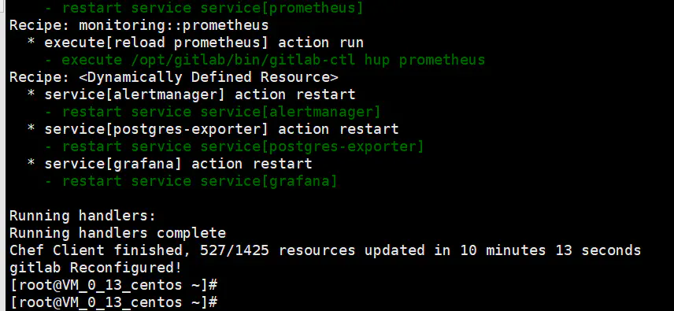
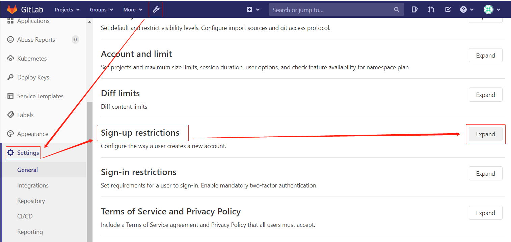
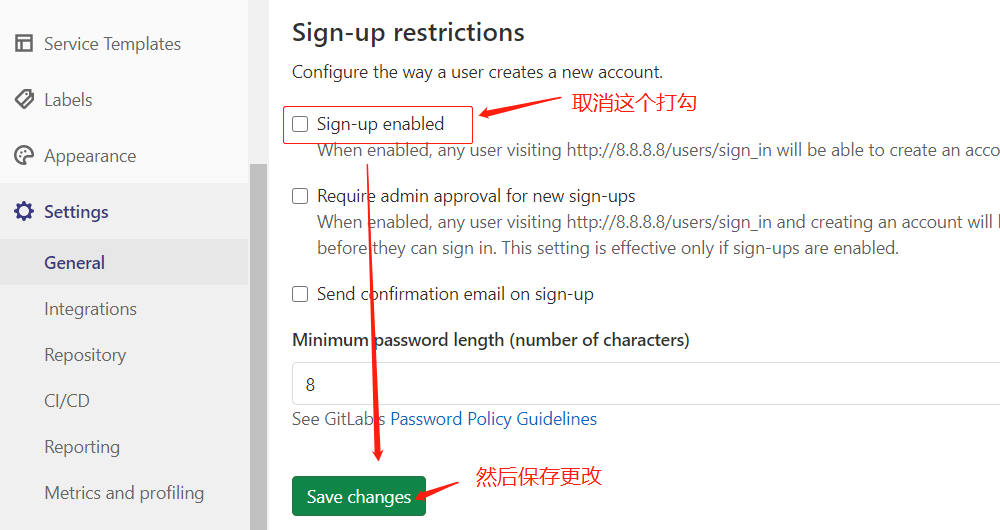
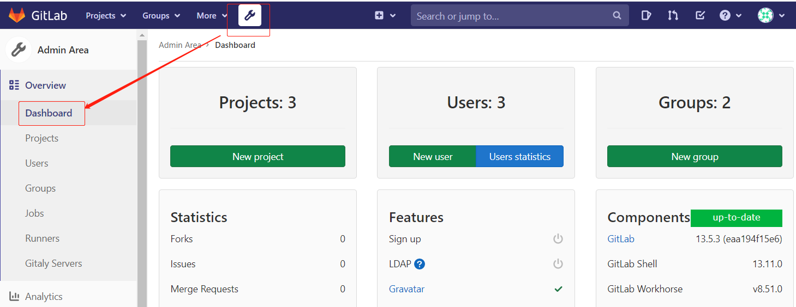
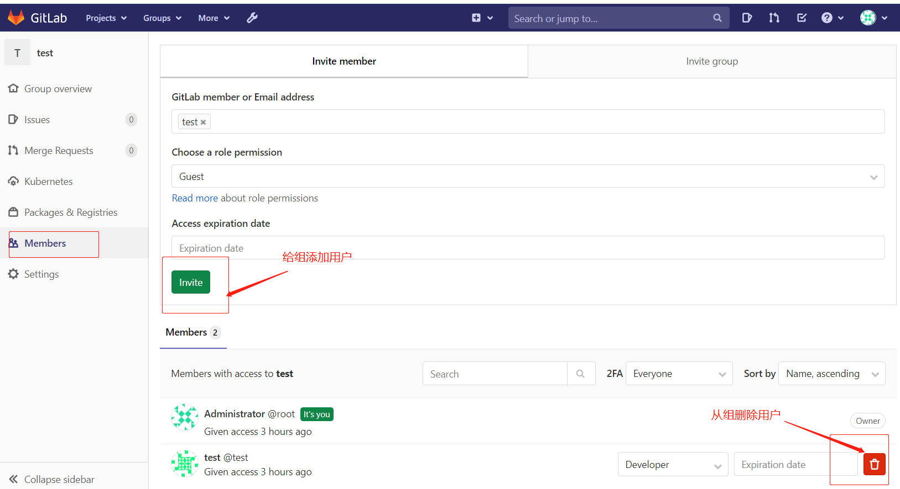
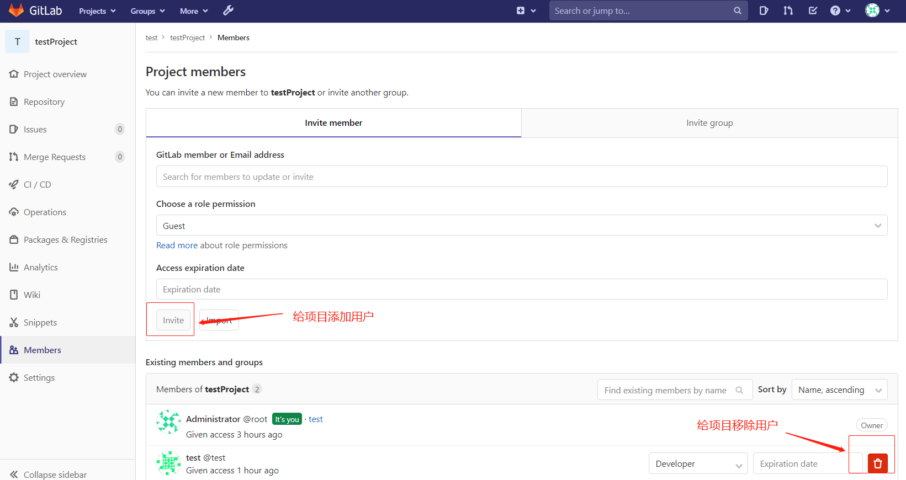
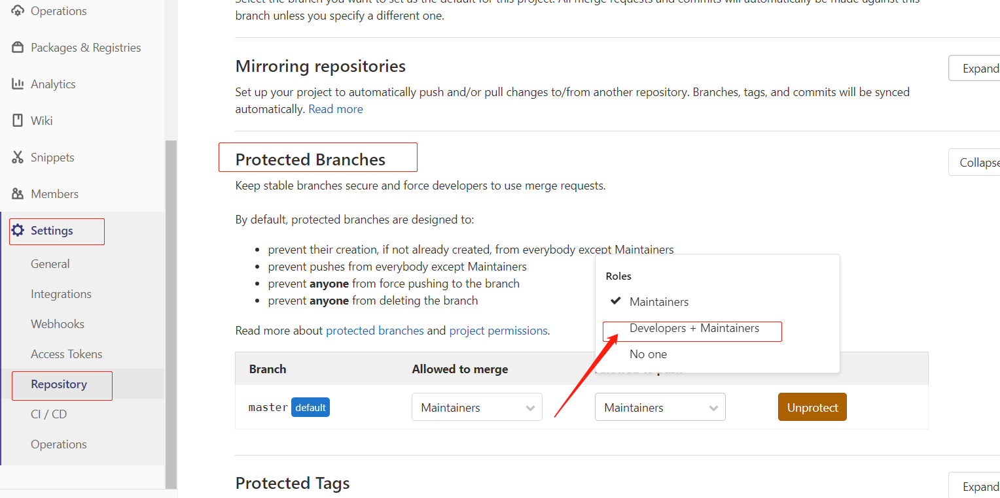
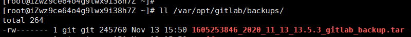
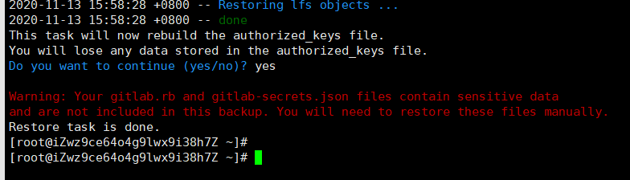

安装GitLab
官网有挺详细的安装步骤：
官网地址: https://about.gitlab.com/install/#centos-7
Centos7安装步骤
1、安装依赖
sudo yum install -y curl policycoreutils-python openssh-server |
2、更新仓库包
包路径: https://packages.gitlab.com/gitlab/gitlab-ce/
gitlab 分为gitlab-ce和gitlab-ee，我们要安装ce社区版,gitlab-ce是社区版，免费的、gitlab-ee是企业版，收费的
## 企业版、收费 |
3、安装邮件服务
注册发送邮件通知，如果您想使用其他解决方案发送电子邮件。
可跳过此步骤并在安装GitLab后配置外部SMTP服务器
如果关闭注册功能方法不需要发邮件的话这步可以跳过
# 安装 |
4、开始安装
这个安装有点慢，看网速内存与cpu。我1核2G低配版，等了好久。
sudo EXTERNAL_URL="http://你的ip地址" yum install -y gitlab-ce |
可以修改配置：
vim /etc/gitlab/gitlab.rb
自己看吧，注释里面有说明
如果出现卡死-解决方案：
1、按住CTRL+C强制结束 |

安装成功
- 访问：http://你的ip地址，即可，看到登陆页面
- 首先会让你输入root用户的密码，也就是管理员的密码
5、GitLab常用命令
sudo gitlab-ctl start # 启动 gitlab 组件 |
6、完全卸载GitLab
|
7、取消注册功能
流程：Admin Area(顶部小扳手) -> Settings -> Sign-up restrictions -> 去掉 Sign-up enabled 的勾选-> 保存更改。
如下图：


重新访问登陆页面，就没有注册的选项了。
8、添加组与用户与项目
这些都有可视化界面了，如下图：

- 很简单点击 NEW 那个按钮即可添加组或用户或项目
- 新建用户需要再编辑一次才能设置密码
8.1、给组添加或移除用户
进入组的详情，然后选择Members 进行邀请添加或移除即可。
如图：

8.2、给项目添加或移除用户
这个和上面一样，先进入项目详情，然后也是选择Members，进行邀请添加或移除即可。
如图：

8.3、给项目更新分支保护设置
- 项目新建，一般
master分支（以后可能改成main分支）会有一个分支保护的功能 - 防止其他人推送删除合并等操作，所以需要修改一下
- 可能会使 Developer 没法push代码。
- 这个和上面一样，先进入项目详情，然后选择
Settings之后选择repository之后protected branches。 - 如下图：推送的地方选择：
Developers + Maintainers

这样之后开发者也就可以有权限了。
9、权限浅析
简单解释下权限
Gitlab用户在组中的权限
- Guest：可以创建issue、发表评论，不能读写版本库
- Reporter：可以克隆代码，不能提交，QA、PM可以赋予这个权限
- Developer：可以克隆代码、开发、提交、push，RD可以赋予这个权限
- Maintainer：可以创建项目、添加tag、保护分支、添加项目成员、编辑项目，核心RD负责人可以赋予这个权限
- Owner：可以设置项目访问权限 - Visibility Level、删除项目、迁移项目、管理组成员，开发组leader可以赋予这个权限
Gitlab中的组和项目的权限
- Private：只有组成员才能看到
- Internal：只要登录的用户就能看到
- Public：所有人都能看到
10、数据迁移
可能会发生服务器迁移，项目代码也需要迁移
10.1、备份旧数据
备份时需要保持gitlab处于正常运行状态，直接执行：
gitlab-rake gitlab:backup:create
使用以上命令会在
/var/opt/gitlab/backups目录下创建一个时间戳_日期.tar的压缩包.压缩包完整名称：
1605253846_2020_11_13_13.5.3_gitlab_backup.tar

10.2、恢复数据
- 把这个压缩包放到新服务器的
/var/opt/gitlab/backups目录下（这个是默认的备份路径） - 然后执行
# 停止相关数据传输
gitlab-ctl stop unicorn
gitlab-ctl stop sidekiq
# 恢复备份数据，只需要调前面的日期，后面不需要填，之后输入两次 YES 即可
gitlab-rake gitlab:backup:restore BACKUP=1605253846_2020_11_13_13.5.3

10.3、注意点
- 如果新服务器未恢复前有项目了，记得备份好，因为会覆盖项目的。
- 还有就是新旧的Gitlab版本要一致，否则恢复可能会失败
- 恢复时有个警告的大致意思是：敏感性信息（
gitlab.rb,gitlab-secrets.json）不会包含在备份中 - 恢复之后，可能需要修改
gitlab.rb,比如external_url参数
基本用法到此结束